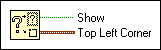

Get Help Window Status Function
Owning Palette: Help VI and Functions
Requires: Base Development System
Returns the status and the position of the Context Help window.
(Real-Time Module) You cannot use this function in VIs that run on RT targets.

 Add to the block diagram Add to the block diagram |
 Find on the palette Find on the palette |